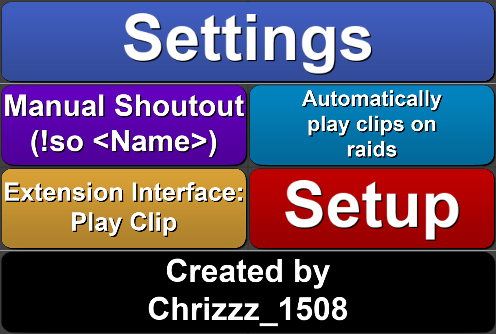
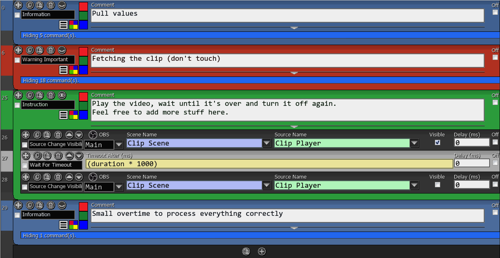
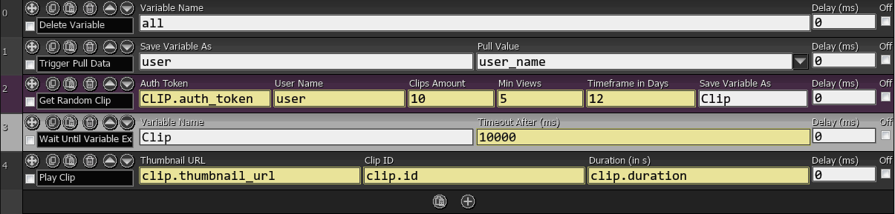

Get Random Clip

Grabs a random clip from a specified Twitch Channel
Getting a random clip and displaying it in your OBS using SAMMI has never
been easier! Check out the features below!
Features
-
Fully customisable request to Twitch including; amount of clips,
timeframe to search, minimum views and cutoff length
-
Pre-configured buttons to trigger on Raids and '!so @user' in chat
- Auto setup button for creating the OBS scene and source needed
- Ability to add more actions when the clip plays
- SAMMI commands so you can create your own buttons
Setup
-
Install the extension. Refer to the SAMMI
documentation
on how to install an extension.
- Ensure OBS is open and connected to SAMMI
-
The extension should now auto run the setup and will be usable as is
with the default values in the SETTINGS button and the
two default buttons for Raids and '!so @user' in chat

Customisation
-
You can customise the default values that the extension uses to get
clips from Twitch by editing the variables in the
SETTINGS button
-
Amount - Default value for how many clips are being
pulled (recommended to leave this at 100)
-
Timeframe - Default value for how old a clip can be
(for example 365 => clip is from the last 365 days)
-
Min_views - Default value for how many views a clip
needs to have before it is pulled
-
Cutoff_length - The maximum amount of time in
seconds which a clip should play until it's cutoff

-
You can add various other actions that happen when the clip plays by
adding them to the
Extension Interface: Play Clip button
Make sure to add everything you want to happen before/as the clip starts
before the 'Wait for Timeout' and everything you want to happen after
the clip ends after the 'Wait for Timeout'

-
If you don't want to use the default Raid and '!so @user' buttons in the
deck, you can delete the triggers from the buttons
-
Remember that if you'd like, you can use the 'Get Random Clip' command
with your own values or ones from the SETTINGS button
along with the 'Play Clip' command using the data returned from the 'Get
Random Clip' command in your own button
